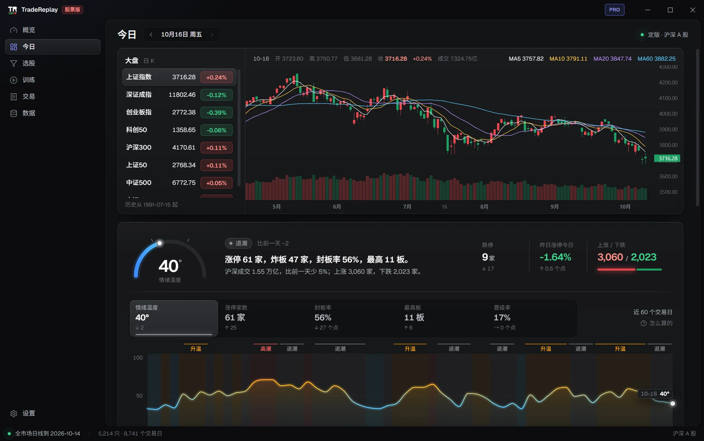
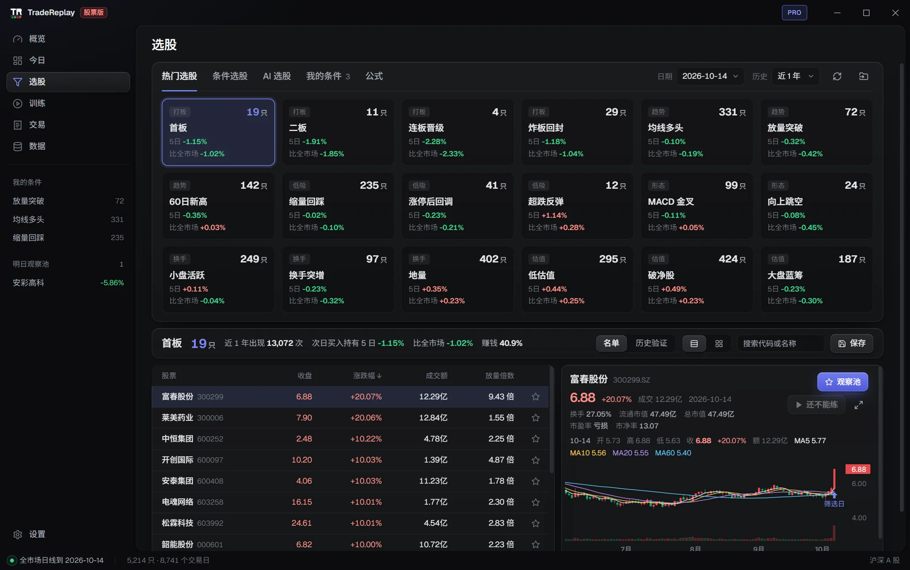
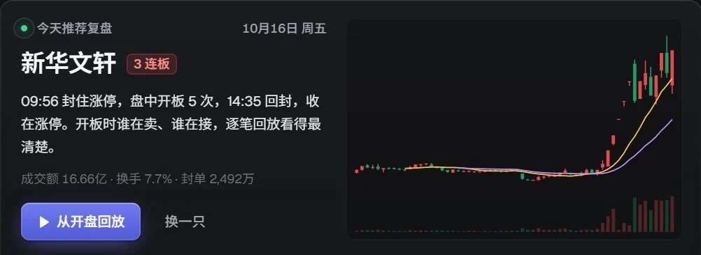

沪深 A 股 · 盘后复盘工作台
收盘后半小时看清今天的市场
全市场看板、条件选股和逐笔回放，装在一个桌面软件里。
看清今天，用历史验证，再回到盘面练一遍。
5,214只沪深 A 股
1990年起的全市场日线
2013年起的逐笔五档
19:00前后出当晚的看板

一天的复盘
每天收盘后的三件事
先看市场，再用历史检验自己的想法，最后回到当天的盘面亲手练一遍。
-
01
看清今天
涨停、炸板、连板梯队和情绪温度一页看完。每晚 19:00 前后出初版，数据到齐后定版。
在软件里：今日 -
02
用历史验证
每个选股条件都回看过去的次日表现。一字板买不进、停牌和 T+1 都算进去。
在软件里：选股 -
03
回到盘面练
挑一只股票、一天，从开盘逐笔回放。看着五档和成交明细，按 A 股规则下单。
在软件里：训练
选股
先看条件过去灵不灵
12 种常用选法开箱即用。也能写通达信公式，或者用中文描述，让 AI 写成公式。
- 历史验证按次日开盘买入算，扣掉费用、一字板和停牌
- 和全市场同期比，看超出的部分是不是真的
- 存成自己的条件，每天收盘自动跑，命中的放进明日观察池


复盘回放
在当天的盘面里练一遍
每天收盘后，软件从涨停和炸板的股票里挑一只值得回放的，点一下就从开盘开始。
- 3 秒一笔快照，五档盘口和成交明细一起回放
- 按 A 股规则成交：涨跌停、T+1、佣金和印花税
- 盲练：隐藏股票名和日期，练完再揭晓
概览
每次打开，先看自己
练习成绩、钱在哪里赚在哪里亏、自己定下的规则，打开软件的第一页就能看到。
今天要做的事
推荐复盘的股票、继续上次的练习、明日观察池。
我的全貌
实战和练习分开算，钱不相加。
在哪里赚钱、在哪里亏钱
按买入时段、持有天数和股票拆开看。
心得笔记
置顶自己的交易规则，提醒还没写复盘的亏损单。
交割单导入即将支持：导入以后，实盘和练习用同一套口径对比。
数据
数据下载到本机，离线也能复盘
数据服务每晚整理当天的日线、逐笔和基础信息。逐笔和分钟线、日线三方核对，补过和对不上的地方都单独标出。
5,214只沪深 A 股
1990年起的全市场日线
2013年起的逐笔五档快照
8个主要指数的日 K